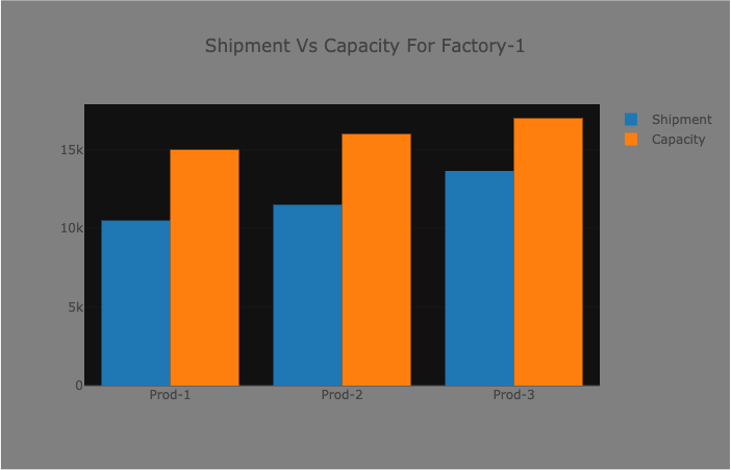
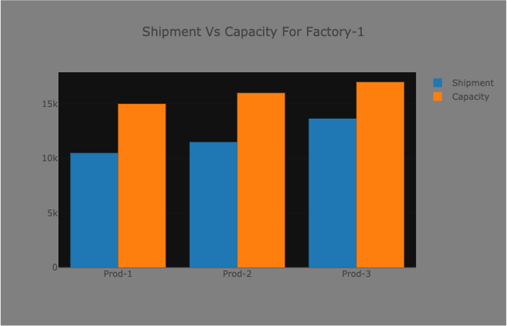

1. Overview
Logistics planning is the process of integrating and utilizing suppliers, manufacturers, warehouses, and retailers so that products are produced and delivered at the right quantities and at the right time while minimizing costs and satisfying customer requirements.
Implementation of Logistics system has crucial impacts on a company’s financial performance. The six major cost components that form the overall logistics costs are: (1) raw material costs, (2) costs of raw material transportation from vendors to manufacturing plants, (3) production costs at manufacturing plants, (4) transportation costs from plants to warehouses, (5) inventory or storage costs at warehouses, and (6) transportation costs from warehouses to end users.
Figure 1: Logistics Chain.
2. Typical Problems
In this section, we list typical logistical problems different industries may face.
- Transportation problem 1: Determine how many products to ship from each factory to each warehouse, to minimize shipping cost while meeting warehouse demands and not exceeding factory supplies.
- Transportation problem 2 (Multi-Level Transportation): Determine how many products to ship from each factory to each warehouse and each customer, to minimize total shipping cost while meeting demands and not exceeding warehouse capacities and factory supplies.
- Transportation problem 3 (Multi-Level, Multi-Commodity Transportation): Determine how many products of several different types to ship from each factory to each warehouse and each customer, to minimize total shipping cost while meeting demands and not exceeding capacities and supplies.
- Knapsack (Partial Loading): Decide which sizes or types of products to load into a vehicle, given its size limits, to best meet demand or to minimize wasted space.
- Facility Location: Determine which (if any) plants to close to minimize total costs, which include fixed operating costs and shipping costs from plants to warehouses.
- Production + Transportation : Determine how many products to produce in each factory and ship to warehouses and customers, to minimize overall costs while meeting demands and not exceeding warehouse capacities and factory supplies.
3. Example solutions
(A) Sigle-Stage Multi-Commodity Transportation Problem.
In this subsection, as an example, we consider Sigle-Stage Multi-Commodity Transportation Problem.
Problem: One needs to minimize shipment cost to deliver 3 products from 2 factories to 10 customers.
Constrains: (a) customer demand for each product and (b) factory capacities.
Details to this problem are shown in the table of Figure 2.

Figure 2: Sigle-Stage Multi-Commodity Transportation Problem.
Figure 3 shows solution for this problem. Provided the delivery costs from Figure 2, we found optimal solution with a minimal cost.

 

Figure 3: Solution for Sigle-Stage Multi-Commodity Transportation Problem.
(B) Facility Choice.
Figure 4: Facility Choice Problem.
Figure 5: Solution for Facility Choice Problem.
Similarly can be solved other problems listed in the previous section.